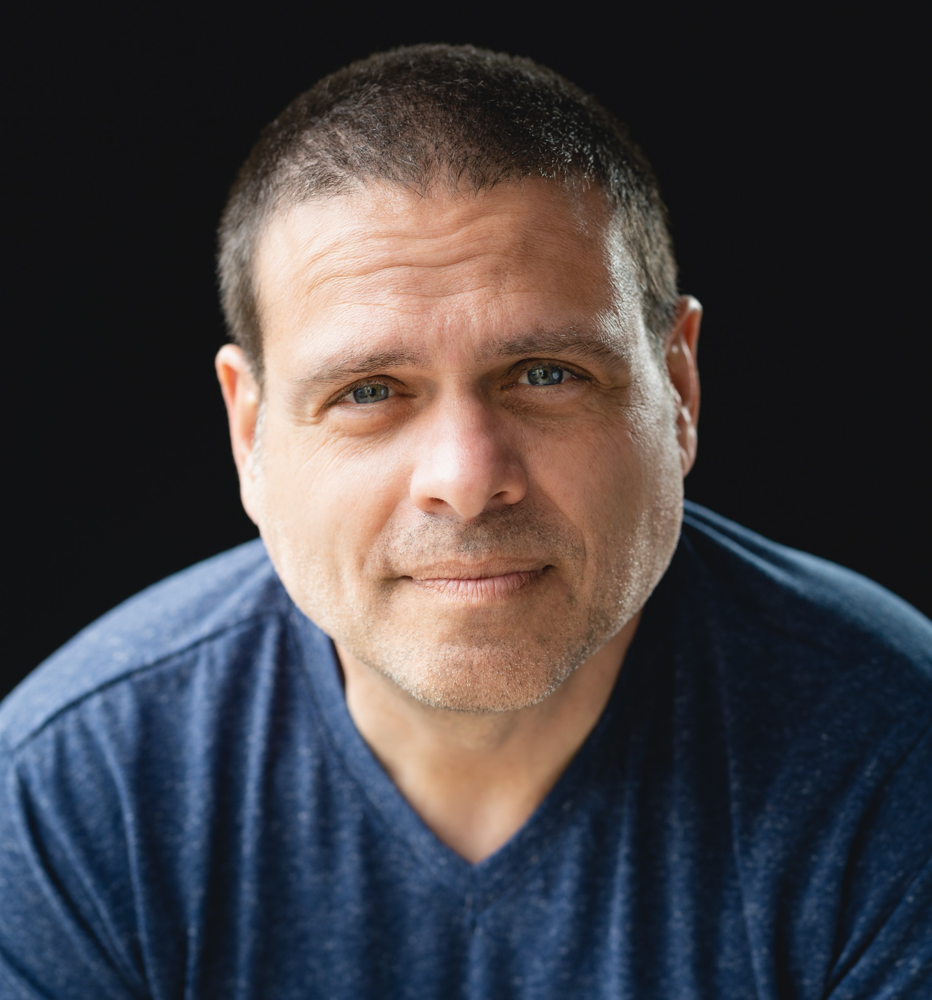
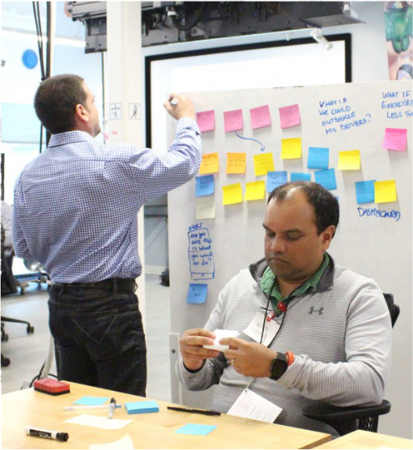

01
We might be solving the wrong problem.
We have momentum and ideas, but something underneath hasn't been examined.
I help uncover the problem actually worth solving.
SEE THE PROBLEM DIFFERENTLY.
I help leaders and teams make sense of complicated, ambiguous problems—especially when the answer isn't obvious yet.
GOT SOMETHING COMPLICATED? →
DOES THIS SOUND FAMILIAR?
We have momentum and ideas, but something underneath hasn't been examined.
Research, data, opinions and decks everywhere—but no clear sense of what matters.
The idea makes sense in our heads, but it isn't landing across the organization.
The same conversations keep happening. Different perspectives. No forward motion.
EXAMPLES OF THE WORK
INTEL DIGITAL HEALTH
A previous digital-health project exposed the deeper problem: human understanding was entering product development too late.
REFRAMƎ: From improving screens → to redesigning the product-development process around human needs.
INTEL EMPLOYEE EXPERIENCE
Traditional surveys could tell us what had happened. The opportunity was to understand what employees were experiencing while there was still time to respond.
REFRAMƎ: From periodically measuring sentiment → to continuously sensing employee experience.
FORMFACTOR
A new manufacturing facility created a chance to shape more than programs. It created a chance to define what becoming part of the organization should feel like.
REFRAMƎ: From designing individual programs → to designing an interconnected employee experience.

ABOUT DAVID SHAW
I'm David Shaw—a creative strategist, reframer, and facilitator who works at the intersection of people, ideas, technology, experience, and humor.
For more than two decades, I've helped organizations navigate ambiguity: uncovering what's really going on, finding the more useful way to see it, and turning that understanding into something people can act on.
My path has crossed design, innovation, employee experience, technology, research, storytelling, facilitation, and community building—including work at Nike and Intel.
That range isn't accidental.
Complex problems rarely stay inside one discipline. Neither do I.
I'm interested in what happens when you change the frame—sometimes through research and strategy, sometimes through a prototype or a conversation, and occasionally through play or humor.
Because sometimes the thing that gets people unstuck isn't another answer.
It's seeing the question differently.
You don't need to know exactly what the problem is. That's often where the work starts.